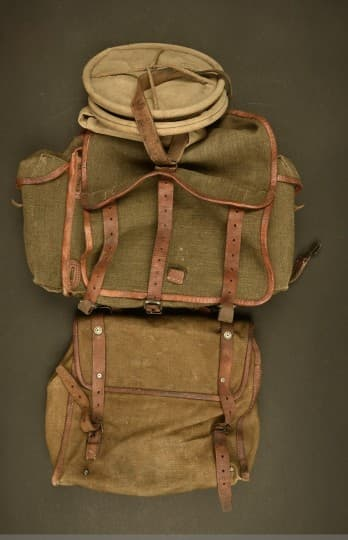
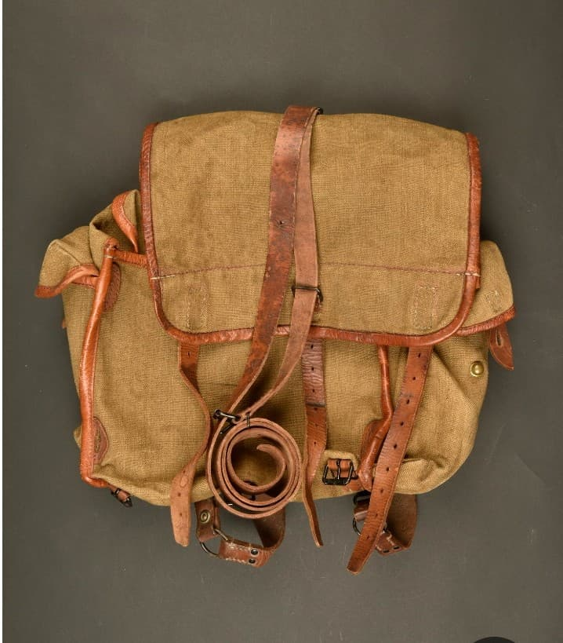
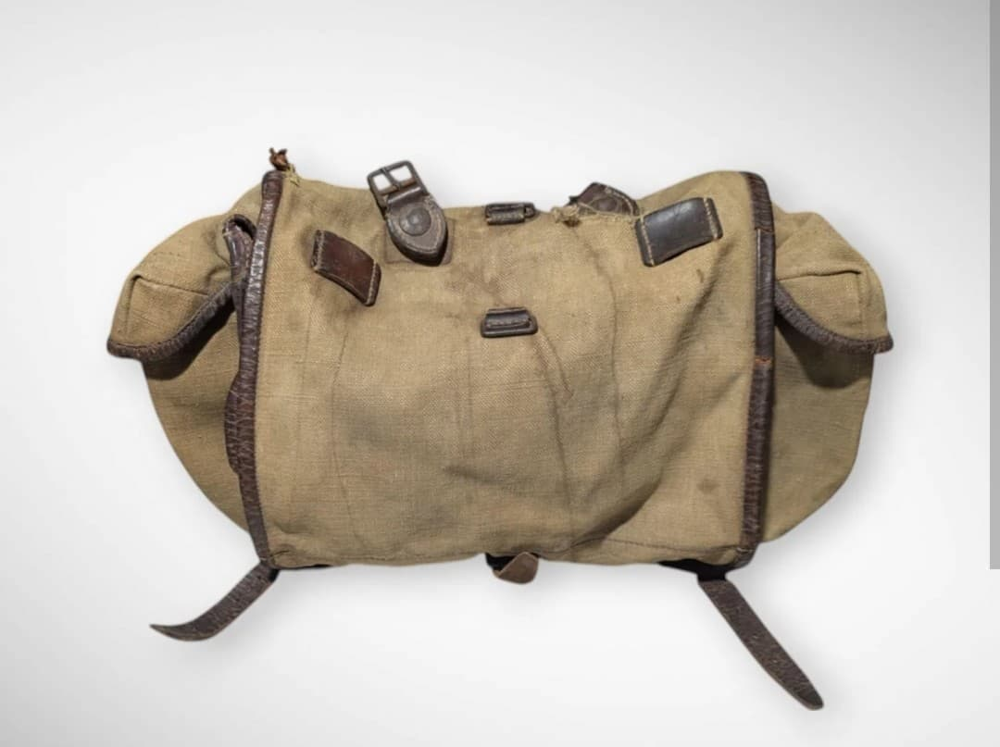

Le sac à dos français modèle 1935–1940 est un élément essentiel du paquetage du fantassin durant la Seconde Guerre mondiale. Conçu pour être robuste, fonctionnel et adapté aux longues marches, il permet au soldat de transporter son matériel personnel, ses vivres et une partie de son équipement de campagne.
Utilisé massivement durant la mobilisation de 1939–1940, il accompagne également certaines unités de la France Libre. Sa conception en toile épaisse et ses sangles en cuir en font un objet emblématique du quotidien militaire français.

Le sac à dos français WW2 est conçu en toile résistante, renforcée par des sangles en cuir permettant une fixation solide sur le dos du soldat. Il est prévu pour supporter les conditions difficiles du front : pluie, boue, frottements et charges lourdes.
Sa capacité permet de transporter les effets personnels, une partie des rations, ainsi que divers accessoires indispensables au fantassin.
Le havresac Modèle 1935 est le petit sac en toile accroché au sac à dos du fantassin. Il contient le matériel quotidien : gamelle, quart, rations, outils, papiers militaires. Le soldat le garde toujours sur lui, même lorsque le sac à dos reste au cantonnement.
Le havresac peut être décroché et porté en bandoulière, ce qui permet au fantassin de conserver l’essentiel de son équipement lors des déplacements rapides ou des missions où le sac à dos complet n’est pas nécessaire.
Le sac à dos modèle 1935–1940 existe en plusieurs variantes durant la période 1939–1940, toutes réglementaires :
Les sacs en toile fine ou nylon ne sont pas représentatifs de la dotation WW2.

Le sac est divisé en deux parties : une partie haute facilement accessible, et une partie basse destinée au matériel volumineux et lourd. Cette organisation permet au fantassin de répartir efficacement le poids tout en gardant à portée de main les objets essentiels.

Le sac à dos modèle 1935–1940 est distribué à la majorité des unités françaises durant la mobilisation. Sa conception simple mais efficace permet une production rapide et une utilisation polyvalente sur le terrain.
Il est également présent dans certaines unités de la France Libre, notamment en Afrique du Nord et au Levant, où il continue d’être utilisé malgré les conditions climatiques difficiles.
Certains sacs sont souvent présentés comme WW2 alors qu’ils ne correspondent pas à la dotation de 1939–1940. Voici les erreurs les plus courantes :
Un sac WW2 doit impérativement être en toile épaisse, avec sangles en cuir et coutures d’époque.
Pour confirmer qu’un sac est bien de la période 1939–1940, plusieurs éléments doivent être cohérents :
Un sac WW2 présente généralement une usure homogène, sans éléments modernes ajoutés.